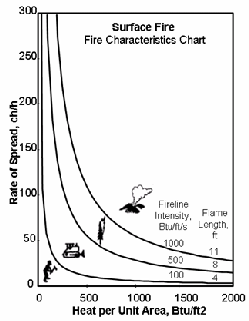

|
|
Fireline Intensity |
Fireline intensity is the heat energy release per unit time from a one-foot
(one-meter) wide section of the fuel bed extending from the front to the rear
of the flaming zone.
Fireline intensity is a function of rate of spread and heat per unit area, and
is directly related to flame length.
Fireline intensity and the flame length are related to the heat felt by a person
standing next to the flames.
|
I/O |
Module |
If |
Notes |
| Input | CROWN | If SURFACE is not also selected and if Fire intensity is entered as fireline intensity is selected as an input option. | |
| SCORCH | If SURFACE is not selectd and if Fire intensity is entered as fireline intensity is selected as an input option. | If SURFACE and SCORCH are both selected, fireline intensity (flame length) in the direction of the spread calculation in SURFACE is used by SCORCH. | |
| Output | SURFACE |
 |
|  |